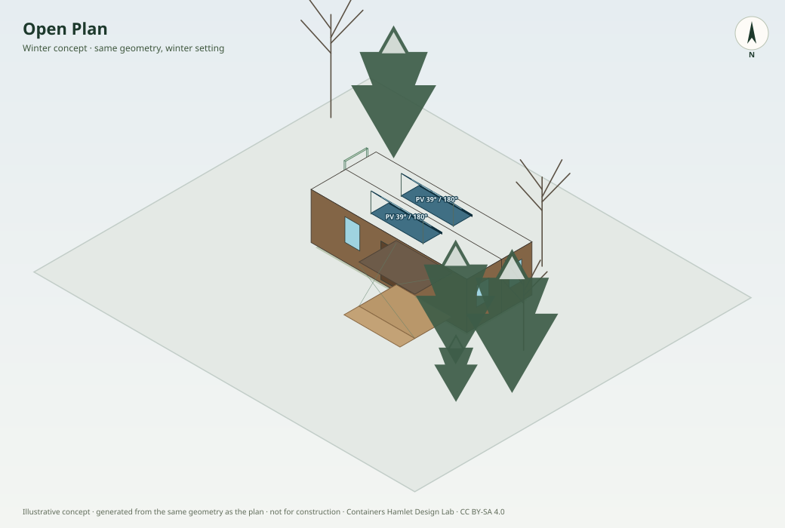

Two 40-foot containers sit side by side, with a large structural opening between them to create a wider living space. Sleeping, bath and work occupy the quieter side.
Concept only; this design is not editable in the current editor.
Five views
View 1 of 5: Exterior architectural view
Illustrative studyExterior architectural view An exterior concept of Open Plan. The timber-clad containers and 4.5 × 3 m screened porch are set against the woodland.Geometry-backed drawingDimensioned concept floor plan Dimensioned concept plan with 2 container modules, interior room bands, openings, 4.5 × 3 m screened porch, deck and primary view.Geometry-backed drawingInterior roof-off cutaway Roof-off cutaway through the same geometry, showing the room bands, structural openings and the relationship to the outdoor rooms.Geometry-backed drawingScreened porch or deck view A cropped porch and deck detail from the same model. It shows the screened or covered outdoor room, deck projection and the adjacent container face.

Illustrative studyWinter exterior view A winter study of the same building geometry, with snow, bare deciduous trees and a low, cool light. It is an atmospheric study, not a snow-load calculation.
The five views share one model. The plan, cutaway and porch detail are geometry-backed drawings; the exterior and winter images are illustrative studies. No slide advances automatically.
Concept facts
Containers
2 × 40ft + 40ft
Nominal conditioned area
59.4 m² (modules plus glazed hall)
Screened / covered outdoor
4.5 × 3 m screened
Glazing intent
15.6 m² approximate glazed area
Thermal envelope
triple glazed, low-e, argon, thermally broken frames; 250 mm roof; 200 mm floor; HRV/ERV
Accessibility
Wider interior helps circulation, but the bathroom still needs an accessible layout.
Structure
Multiple modules and/or wall removals need structural engineering review.